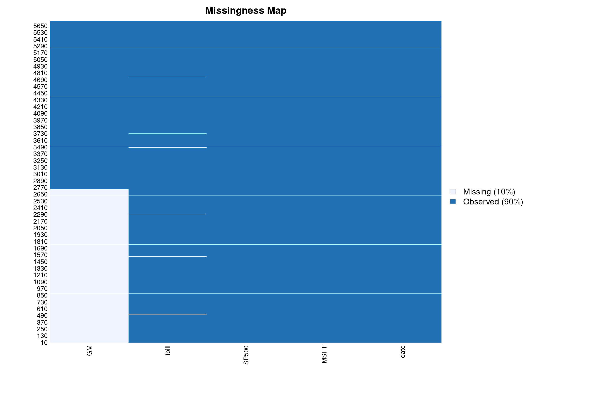
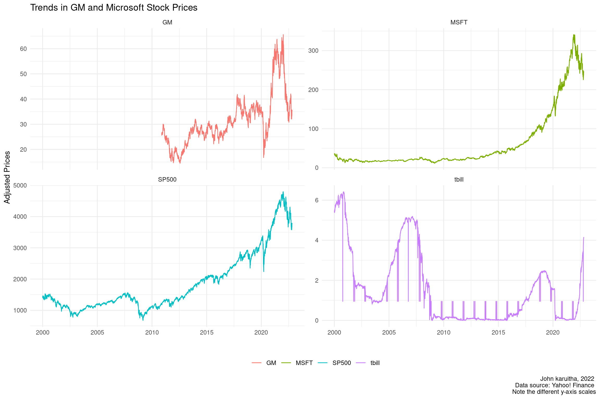
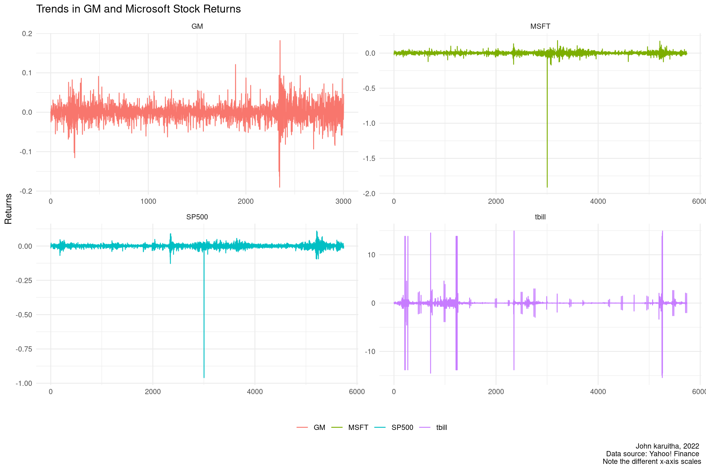
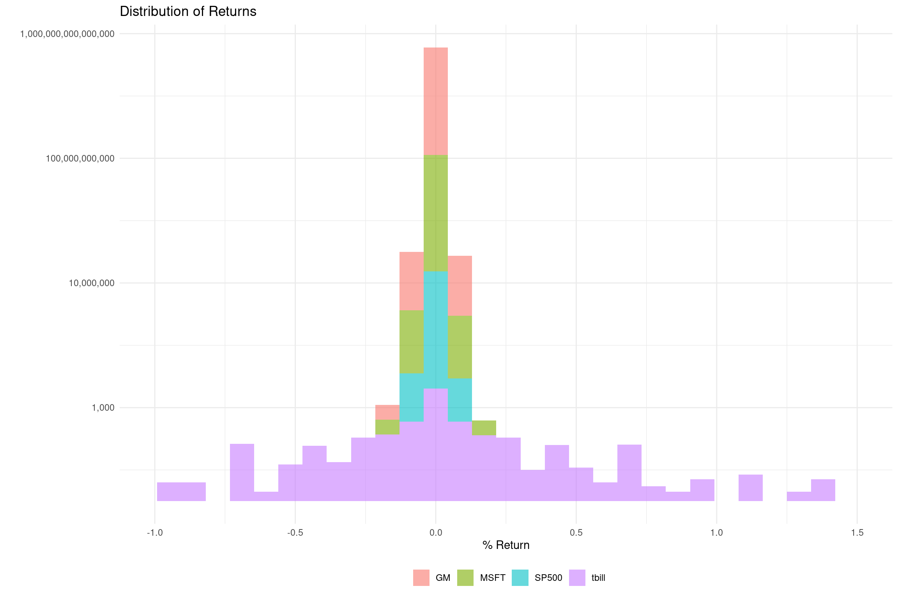
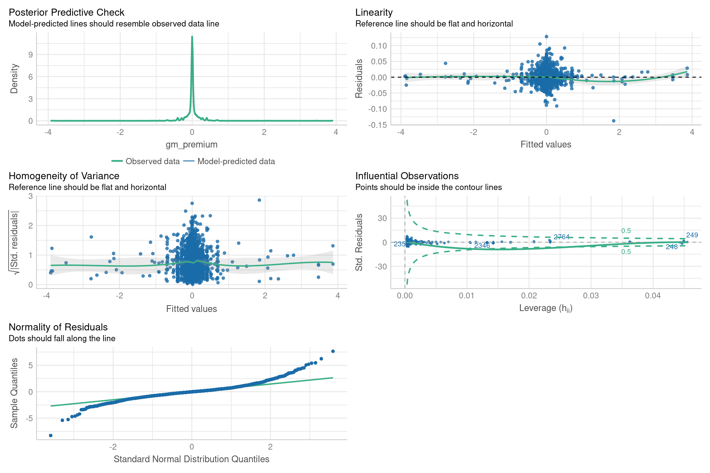
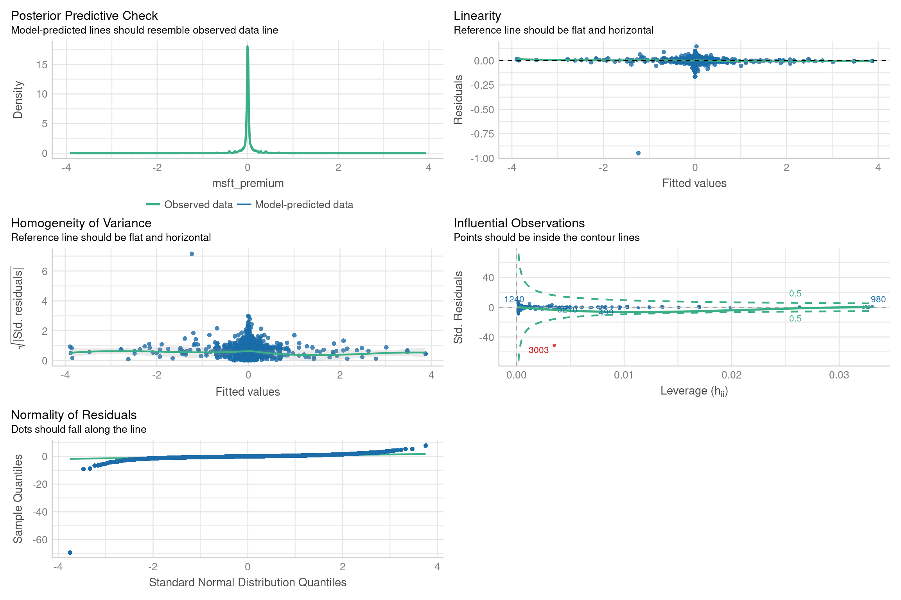

In this analysis, I use stock prices for Microsoft and General Motors (GM) to estimate the systematic risk of the stocks using the Capital Asset Pricing Model (CAPM). CAPM, developed by William Sharpe, Jack Treynor, John Lintner and Jan Mossin (Perold, 2004) quantifies the systematic risk and the expected return on an asset, particularly stocks.
Tip
Please visit my rpubs site to see more data projects. Alternatively, copy and paste the link <www.rpubs.com/Karuitha> into your browser.
Important
Skills & Technologies Applied: R, Quarto, Data Science, and Machine Learning.
Systematic risk is inherent to the entire market or market segment. The risk affects the entire economy. Hence, investors cannot diversify away systematic as they can unsystematic risk. For this reason, systematic risk is also referred to as un-diversifiable risk, market risk or volatility risk.” In finance terminology, \(\beta\), a symbol that we define in the next section before we encounter it in the section on regression analysis represents systematic risk.
CAPM quantifies the relationship between the required rate of return of an investment and its risk. The model utilizes return on the given asset \(r_a\) (in our case the return on GM or Microsoft), the risk free rate \(r_f\) usually proxied by the return on the 90 day treasury bills, and the return on the market \(r_m\) taken as the return a market index like the Dow Jones Industrial Index, the S&P 500, or other similar indices (Bodie, 2020). The relationship is as follows;
\(r_a - r_f = \alpha + \beta (r_m - r_f)\)
A stock with a \(\beta\) of 1 is as volatile as the market. However, stocks with \(\beta > 1\) are more volatile than the market and hence should command a higher return. Including such a stock in your portfolio will raise the volatility of your portfolio relative to the market portfolio. On the contrary, stocks with a \(\beta < 1\) have lower risk relative to the market and correspondingly, a lower rate of return. The stocks with a \(beta < 1\) reduce the volatility of the portfolio relative to the market. In other words, such assets have a diversification benefit.
Investors are risk-averse, utility-maximizing, rational individuals.
Markets are friction-less, devoid of transaction costs and taxes.
Investors plan for the same, single holding period.
Investors have homogeneous expectations or beliefs.
All investments are infinitely divisible.
Investors are price takers.
As a result we have several alternatives to CAPM. One such model is based on the Arbitrage Pricing Theory (APT) (Roll, 1980) that, even when more theoretically solid, are harder to apply (Huberman, 1982).
More recent developments are the models by Fama and French that seek to improve on CAPM. For instance, the Fama and French 3 factor model extends CAPM by factoring in the proportion of the value stocks and small cap stocks in a portfolio. The Fama and French model has seen further extensions by adding more factors (Dirkx, 2020; Mosoeu, 2020).
3Data
I use data from Yahoo! Finance for the period 2002-2022. The Tidyquant package in R (courtesy of Matt Dancho) (R Core Team, 2022; Dancho, 2022) provides a convenient way to get this data (see the code chunk below). I collect data for the period from January 2, 2000 to October 25, 2022. Further, I only work with adjusted prices (adjusted). The adjustments take into account events like stock splits and share buy-backs. The data also includes the 90 day US treasury bills rate that proxies the risk free rate.
Code
## uncomment this code to download the data # tq_get(c("GM", "MSFT", "^GSPC"),# get = "stock.prices",# from = "2000-01-01",# to = "2022-10-25") %>%# select(date, symbol, adjusted) %>%# mutate(symbol = case_when(# # symbol == "^GSPC" ~ "SP500",# # TRUE ~ symbol# )) %>%# # write_csv(., "stocks.csv")# # ###################################### tq_get("DTB3", from = '2000-01-01', to = '2022-10-25', get = "economic.data") %>% # select(date, symbol, price) %>% # rename(adjusted = price) %>% # mutate(symbol = if_else(symbol == "DTB3", "us_tbill", symbol)) %>% # write_csv(., "tbills.csv")
The result is a data set with 5740 and 5 columns. The table below defines each of the variables.
Code
tribble(~ Variable, ~ Description,"Date", "The date corresponding to the stock price.","GM", "The stock for GM, General Motors.","MSFT", "The stock for Microsoft.","SP500", "The S&P 500 Index.","tbill", "The US 3 months treasury bills rate.") %>%formatting_function(caption ="Description of Variables")
Description of Variables
Variable
Description
Date
The date corresponding to the stock price.
GM
The stock for GM, General Motors.
MSFT
The stock for Microsoft.
SP500
The S&P 500 Index.
tbill
The US 3 months treasury bills rate.
4 Exploring the Data
4.1 Missing Values
The data set has a few missing values for treasury bills. However, for GM, data is only available in the Yahoo! Finance database from November 18, 2010 and hence the notable gap.
Code
Amelia::missmap(final_data)

Missing values
Hence I interpolate the missing values with the median.
We then examine the trend in stock prices for GM and Microsoft in Figure () below.
Code
final_data %>%pivot_longer(cols =-date, names_to ="stock", values_to ="value") %>%ggplot(mapping =aes(x = date, y = value, color = stock)) +geom_line() +theme_minimal() +labs(x ="", y ="Adjusted Prices",title ="Trends in GM and Microsoft Stock Prices",caption ="John karuitha, 2022 \n Data source: Yahoo! Finance \n Note the different y-axis scales") +theme(legend.position ='bottom', legend.title =element_blank()) +facet_wrap(~stock, scales ="free_y")

Trends in GM and Microsoft Stock Prices
All the stocks have had a steep increase in prices. The treasury bill rate has been relatively flat compared to the stock with notable occasional spikes.
4.2 Summary Statistics for Stock Prices
Next, I summarise the prices of stocks.
Code
#head(final_data)final_data %>%select(-date) %>% skimr::skim_without_charts() %>%mutate(across(-c(skim_type, skim_variable), .fns = round, 2)) %>%select(-skim_type) %>%formatting_function(caption ="Summary Statistics for Full Data")
Summary Statistics for Full Data
skim_variable
n_missing
complete_rate
numeric.mean
numeric.sd
numeric.p0
numeric.p25
numeric.p50
numeric.p75
numeric.p100
GM
2737
0.52
31.37
10.17
14.50
25.26
29.28
35.73
65.59
MSFT
0
1.00
60.90
75.87
11.44
19.10
23.01
59.68
340.88
SP500
0
1.00
1857.13
951.66
676.53
1182.11
1426.67
2305.66
4796.56
tbill
0
1.00
1.53
1.77
0.00
0.09
0.95
2.28
6.42
4.3 Trends in Stock Returns
In this section I compute the returns of the assets and visualize them. I compute the return of each stock as the price of the stock today less the price of the stock in the previous day divided by the price of the stock in the previous day.
returns <- final_data %>%pivot_longer(cols =-date, names_to ="stock", values_to ="value") %>%mutate(value = value +0.00000001) %>%group_by(stock) %>%summarise(return =diff(log(value))) %>%drop_na(return) %>%mutate(day =row_number()) %>%ungroup() %>%relocate(day)#####################################returns %>%ggplot(mapping =aes(x = day, y = return, color = stock)) +geom_line() +theme_minimal() +labs(x ="", y ="Returns",title ="Trends in GM and Microsoft Stock Returns",caption ="John karuitha, 2022 \n Data source: Yahoo! Finance \n Note the different x-axis scales") +theme(legend.position ='bottom', legend.title =element_blank()) +facet_wrap(~stock, scale ="free")

Trends in GM and Microsoft Stock Returns
The stocks and the market exhibit mean reversion although the GM stock appears the most volatile. The returns from the stock of Microsoft are surprisingly stable and closely resembles the pattern of the market portfolio (S&P500). The treasury bill has an erratic pattern with notable swings. We shall revisit the significance of this perceived difference in volatility in the next section section. We also look at the distribution of the variables in the dataset.
Code
returns %>%drop_na(return) %>%ggplot(mapping =aes(x = return, fill = stock)) +geom_histogram(alpha =0.6) +theme_minimal() +labs(x ="% Return", y ="", title ="Distribution of Returns") +theme(legend.title =element_blank(),legend.position ="bottom") +xlim(-1, 1.5) +scale_y_continuous(trans ='log10', labels = scales::comma_format())

Distribution of Stock Returns
4.4 Summary Statistics - Stock Returns
In this section, we summarise the data on stock returns.
To fit the regression model we compute the excess returns of the stocks (GM and Microsoft) and the market portfolio (S&P 500) over return on the US 90 day Treasury bills rate. For each stock, we fit the excess return (premium) against the excess return of the market.
5.1 Regression for GM Stock
The \(\alpha\) for GM is negative but not statistically significant. However, the \(\beta\) is significant but very close to 1 (at 1.0012069).
Call:
lm(formula = msft_premium ~ market_premium, data = .)
Residuals:
Min 1Q Median 3Q Max
-0.94980 -0.00581 -0.00005 0.00604 0.14447
Coefficients:
Estimate Std. Error t value Pr(>|t|)
(Intercept) 8.070e-07 2.456e-04 0.003 0.997
market_premium 1.002e+00 8.682e-04 1154.306 <2e-16 ***
---
Signif. codes: 0 '***' 0.001 '**' 0.01 '*' 0.05 '.' 0.1 ' ' 1
Residual standard error: 0.01861 on 5737 degrees of freedom
Multiple R-squared: 0.9957, Adjusted R-squared: 0.9957
F-statistic: 1.332e+06 on 1 and 5737 DF, p-value: < 2.2e-16
5.3 Are the \(\beta\) ’s for Both Stocks Significantly Different from 1 at the 95% Confidence Level?
To evaluate the riskiness of an asset, we examine 2 values \(\alpha\) and \(\beta\). In both cases the alpha is not statistically significant. The threshold for \(\beta\) is 1. An asset with a \(\beta\) of 1 is as volatile as the market portfolio. For \(\beta > 1\), the asset is more volatile than the market portfolio and commands higher returns. The opposite is true for \(\beta < 1\).
In this section we examine hether the computed \(\beta\) differ significantly from 1. The hypotheses are as follows.
H0: The \(\beta\) is not equal to 1. H1: The \(\beta\) is equal to 1.
In this section, e check for violations of the regression model assumptions. Note that the model has one independent variable so that multi-collinearity is not an issue. The model evaluation focuses on linearity, homoscedasticity, outliers, and normality of residuals.
6.1 GM Model
Figure () below shows that the model does not significantly violate these assumptions but for normality of residuals. Even then the model does not display a high degree of departure from this assumption.

6.2 Microsoft Model
Figure () below shows that the model for Microsoft satisfies all the assumptions. As a robust model, it could be useful for prediction.

7 Conclusion
In this analysis, we used the CAPM to estimate the systematic risk for GM and Microsoft stocks. The main findings are that both stocks are as volatile as the market portfolio. The implication is that in the long run, these stocks these stocks may not provide diversification benefits for investors. The results also suggest that while investors may outperform the market in the short run, they may not sustain this performance for extended periods.
8 References
Bodie, A.A.M., Zvi AND Kane (2020) Investments. Boston: McGraw-Hill-Irwin.
Dirkx, F.J., Philipp AND Peter (2020) “The fama-french five-factor model plus momentum: Evidence for the german market,”Schmalenbach Business Review, 72(4), pp. 661–684.
Dumas, B., Bernard AND Allaz (1996) “Critique and evaluation of the CAPM,” in Financial securities. Springer, pp. 113–149.
Huberman, G. (1982) “A simple approach to arbitrage pricing theory,”Journal of Economic Theory, 28(1), pp. 183–191.
Mosoeu, O., Selebogo AND Kodongo (2020) “The fama-french five-factor model and emerging market equity returns,”The Quarterly Review of Economics and Finance [Preprint].
Perold, A.F. (2004) “The capital asset pricing model,”Journal of Economic Perspectives, 18(3), pp. 3–24.
R Core Team (2022) R: A language and environment for statistical computing. Vienna, Austria: R Foundation for Statistical Computing. Available at: https://www.R-project.org/.
Roll, S.A., Richard AND Ross (1980) “An empirical investigation of the arbitrage pricing theory,”The Journal of Finance, 35(5), pp. 1073–1103.
Simmet, W., Anastasia AND Pohlmeier (2020) “The CAPM with measurement error:‘there’s life in the old dog yet!’”Jahrbücher für Nationalökonomie und Statistik, 240(4), pp. 417–453.